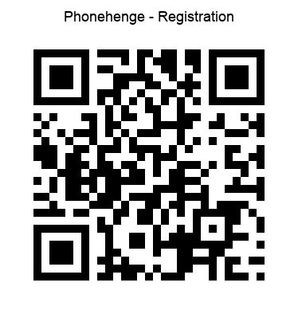

Satellite Gamelan Phone Registration
Phone registration is essential for taking part in a Satellite Gamelan performance. Registration means your phone will play in a secure environment. Registration will never happen on-line. It must be done in person, before the first rehearsal.
The security of your personal information matters. Never entrust it to a web bot.
Initially, you will connect your phone to a secure Wi-Fi network that is disconnected from the internet. The network password will be given to you verbally by a trusted person if I am not available. Secondly, you will install the Satellite Gamelan security certificate on your phone by scanning a QR code. With the certificate installed, your phone knows the Satellite Gamelan is a web assembly app that runs safely inside your phone’s web browser and will not interfere with your phone’s normal behaviour.
The Satellite Gamelan security certificate will never record your personal information and should only be installed on your phone in your presence, helped, where necessary, by someone you trust. It can be removed from your phone at anytime and should be removed after the performance. Thank you for taking part.
The following three-step phone registration process allows the Satellite Gamelan Certificate to be downloaded, installed and trusted. Start by scanning the QR code then complete the three steps on your phone. Once your phone is registered you are ready to launch the Satellite Gamelan app, This happens when you scan a second QR code.
NOTE. This is not the rehearsal/concert launch page. Use Satellite Gamelan Leader or Consort QR codes to start rehearsal/performance.
Please use your phone to scan the QR code
Connect your phone to the Vercoe Wi-Fi network, then use your phone to scan the QR code then chose your phone type to complete registration. Satellite Gamelan supports iPhones and Android phones

- DOWNLOAD
- INSTALL
- TRUST
Tap Register iPhone (Safari) to download the Satellite Gamelan Root certificate then
go to Settings → General → VPN & Device Management → Profile Downloaded and tap Profile Downloaded to install the Satellite Gamelan Root certificate then
go to Settings → General → About → Certificate Trust Settings and under Enable Full Trust for Root certificates, toggle the horizontal switch right to enable full trust for the downloaded Root certificate (enabled switch is green).
- DOWNLOAD
- INSTALL
- TRUST search for Install certificate and choose
Tap Register Android → Encryption & Credentials → Install a certificate or alternatively, More security settings → Encryption & Credentials → Install a certificate then
choose SatGam-rootCA.cer
go to Settings and search for Install a certificate then select CA certificate to install the downloaded Root certificate
SatGam-rootCA.cer
Expect an Android warning whenever a local certificate authority is manually installed.
This means the final trust decision is always made by the phone owner.
After registration
At the time of registration the certificate you installed will be trusted by your browser. This means your phone is ready to take part in rehearsals and concerts using the Satellite Gamelan web app.
For rehearsal/performance, scan the appropriate Satellite Gamelan QR code:
- Leader QR code — opens
leader.html. - Consort QR code — opens
consort.html.